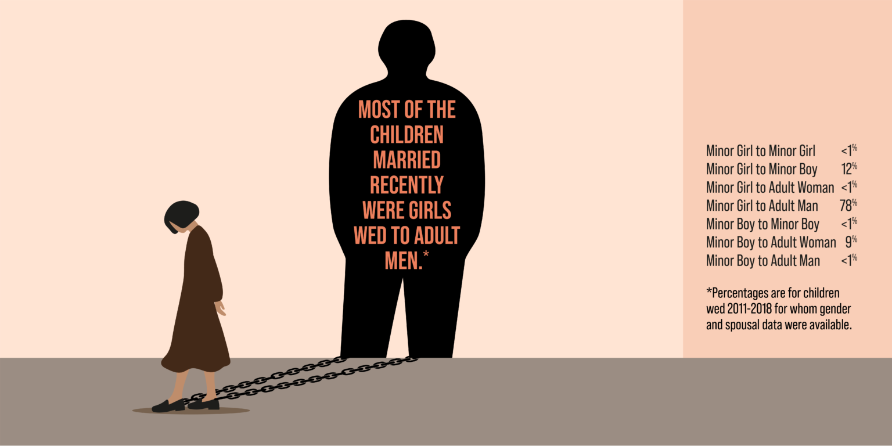
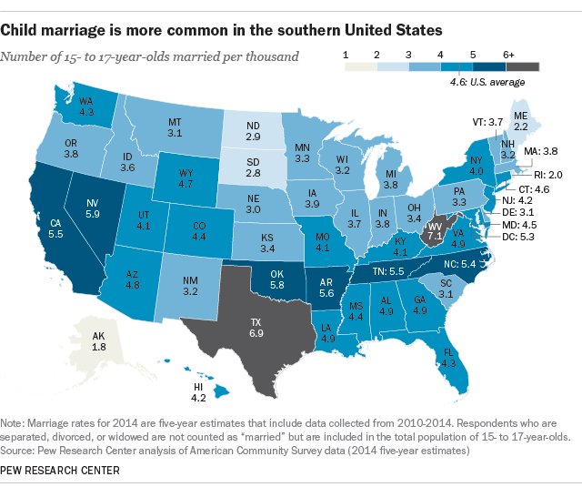
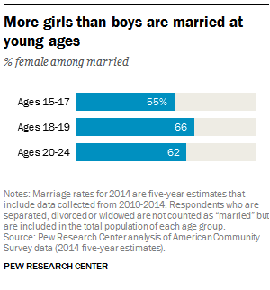
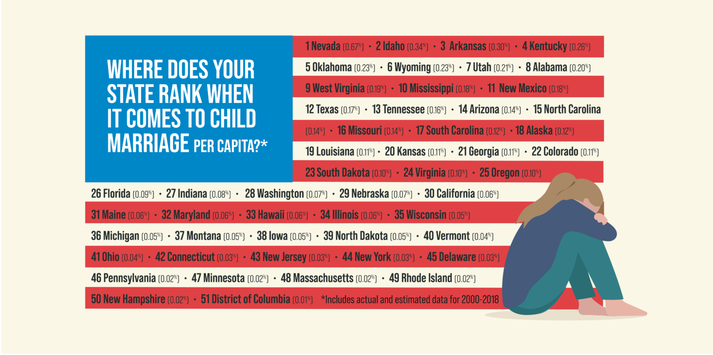

Fast Facts
- As of 2014, nearly 58,000 minors in America were married before the age of 18
- Child marriage is more common with girls than boys
- Over 200,000 children were married in America between 2000 and 2015
- Girls in America who marry before the age of 19 are 50% more likely to drop out of school and four times more likley to be locked into a chain of poverty.
- Children of child brides are 60% more likely to die in the first year of life
- In May of 2018, Delaware became the first state to make it illegal for anyone under 18 to be married under any circumstances.
- In Indiana, seventeen year olds may get married with parental consent.
- In 2018, 2,493 minors were married.
- While the national number of children that are married annually is decreasing each year, the rate of child marriage is unlikely to reach zero without judicial involvment.
- Child marriage increases a teenager's chance of facing abuse from her spouse.
- Girls who marry before the age of 19 are 50% more likely to drop out of high school and four times less likely to graduate college.
What Allows Child Marriage To Occur in America?
One of the reasons behind child marriage in America is state laws that allow minors to wed. For example, in many states, minors as young as sixteen may marry with the parental consent of at least one parent. Such laws are loopholes that force children to marry young. Some reasons as to why girls are forced to marry are because of gender inequality, and thinking that marriage will be in the girl's "best interests". Child marriage may also happen due to financial insecurity. Families with low income may find that marrying their daughter will free them of a financial burden. One example of this is the



